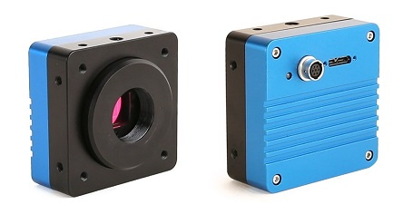

Description
Our photographic observation method uses professional camera equipment to capture high-resolution images of the sky under conditions that conventional cameras cannot handle. The system combines several deliberate choices in hardware and software, each addressing a specific problem in observing fast-moving aerial objects.
1. Full Spectrum + Infrared (IR) Filter
UAP/UFO craft are often reported to use stealth technology to hide from visible light. Infrared emission penetrates that concealment and makes the object visible. A full-spectrum camera sensor paired with a dedicated IR filter captures both visible and infrared signatures.
2. 4K Analysis
A 4K resolution enables magnification (zoom) during post-processing, making small distant objects visible with useful detail.
3. 120 fps (Frames per Second)
UAP move exceptionally fast — often above 32,000 km/h. A slow frame rate would either miss them entirely or capture them as motion-blurred streaks. 120 fps "freezes" their motion.
4. Micro 4:3 Sensor
The smaller Micro 4:3 sensor handles the data flow without problems, allowing the camera to sustain high frame rates at high resolution.
5. Wide-Angle Lens
Since objects cross the sky at great speed, a wide-angle lens increases the probability of capturing them within the field of view.
6. Tripod + Manual Focus
For a stable base. Manual focus with "Focus Peaking" ensures the sky stays sharp, without the blurring that can result from autofocus hunting on a featureless background.
Equipment

Related
The full methodology and demonstration of this system were presented by Dr. Georgios Florides at the GRUFON Conference in Athens (September 2026). The presentation is available in our announcements section.